QFT Replay Simulator – Practice & Backtest Forex Strategies · MT5 & MT4
Trade the past.
Pass the future.
اپنی اسٹریٹجی کو پیسہ لگانے سے پہلے ٹیسٹ کریں
QFT Replay Simulator is a free forex backtesting tool for MetaTrader 5 and MetaTrader 4, and a Soft4FX and FX Replay alternative that runs inside your own MetaTrader. Pick any day, replay it candle by candle, trade it like live, practise a prop firm challenge, and get a report with equity curve, journal and a Monte Carlo test that tells you how much to risk.
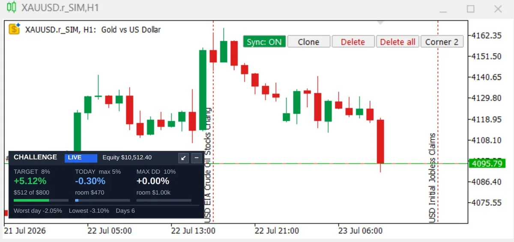
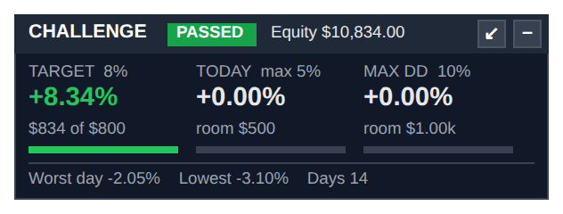
Soft4FX & FX Replay alternative: QFT vs Soft4FX, FX Replay & Forex Tester
The best-known replay tools, side by side. Only QFT combines replay inside your own MetaTrader 5, a prop firm challenge mode, lot size from your $ risk, drawings that follow you to every chart, sessions with killzones and a money management plan built from your results.
Swipe the table sideways to see every tool →
| Feature | Our tool QFT Replay SimulatorMT5 & MT4 · Qazi Forex Tips | Soft4FXForex Simulator | FX ReplayBrowser app | Forex Tester OnlineBrowser app | TradingViewBar Replay |
|---|---|---|---|---|---|
| Runs inside your MetaTrader | YesMT5 and MT4, your own charts and broker | YesMT4 & MT5 | NoBrowser | NoBrowser | NoBrowser |
| Price data | YesYour broker's ticks or M1, or import CSV | Own tick data, included | Own 1-minute data | Own tick data | Exchange feed |
| Prop firm challenge mode | YesLive PASSED / FAILED dashboard | No | Yes | YesPro plan | No |
| Lot size from your $ risk | YesType $ risk, the SL sets the lot | Yes | — | — | NoManual |
| Several timeframes moving together | YesAll 21 MT5 timeframes | Yes | Yes | YesUp to 10 charts | — |
| Drawings follow you to every chart | YesAuto-Sync | — | — | — | — |
| Sessions, ICT killzones, Asian and previous-day levels | YesColoured on the chart | — | — | — | — |
| News on the chart with auto-pause | YesLines + pause before release | Calendar since 2007 | Economic calendar | Economic calendar | — |
| Renko and Range charts | Yes | YesPlus seconds charts | — | — | NoNot in replay |
| Money management plan from your results | YesHalf Kelly + Monte Carlo worst case | Statistics & export | Monte Carlo & statistics | Statistics, Exit Optimizer (Pro) | No |
| Report with equity, journal & streaks | Yes | YesStatistics | Yes | Yes | No |
| Support in Urdu on WhatsApp | YesPlus Urdu videos on YouTube | English | English | English | English |
| Free version | YesDemo, 5 trades | YesDemo, 5 trades per simulation | YesBeginner plan, 50 trades | YesDemo | YesDaily and higher only |
| Price | Ask on WhatsApp | $109 lifetime | $17.99–$35 / month | $199 / year · $499 lifetime | Paid plan for intraday |
Checked October 2026 from each maker's page, MQL5 Market and independent reviews. ✓ = listed feature, — = not listed by the maker. Sources
- Soft4FX – TheGodFunded review
- FX Replay – TheGodFunded review
- Forex Tester – TheGodFunded review
- TradingView – Bar Replay help (data and chart types)
Product names belong to their owners. Qazi Forex Tips is not affiliated with them.
Start the challenge
when you are ready.
Version 3.04 makes the simulator work the way you actually practise: start a Prop Firm Challenge at any moment of the replay, add an indicator once and see it on every timeframe, and save your simulations where you want, with your own name.
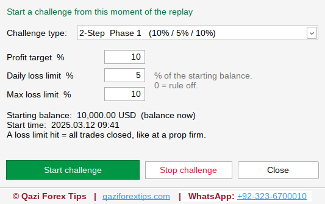
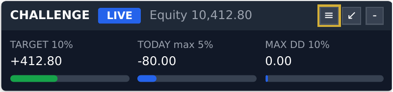
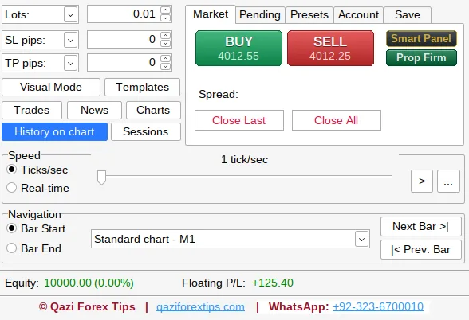
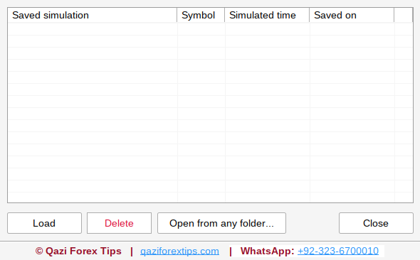
Indicators on all replay charts
Add an indicator to one replay chart and the simulator copies it to every other replay chart within about a second, with the same settings; remove it once and it goes from all of them. Each chart calculates it on its own timeframe, so an EMA 50 on H4 is the H4 average, exactly as in live trading. Top-down analysis becomes one click: trend filter once, direction on H4, structure on H1, entry on M5. (MT5 version; switch it off in the Inputs if you want different indicators per chart.)
A clear chart.
Every control in one slim bar.
The big simulator window now shrinks into the Smart Panel: Prev, Play, Next, speed, lot, Buy, Sell, Close All, floating P/L and the replay time. Put it below the price and keep your eyes on the candles.

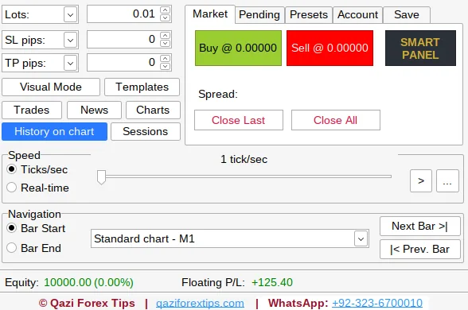
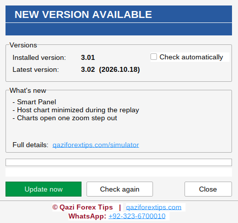
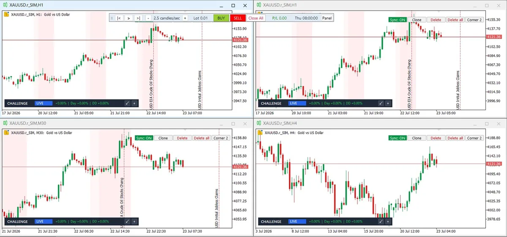
Everything a manual trader needs to backtest honestly
The future stays hidden until you press play. You see only what a trader saw at that moment, on every timeframe at once.
Market replay
Candle by candle, tick by tick or real-time speed. Next Bar, Prev Bar to rewind, Bar Start / Bar End and Go to any date. The future stays hidden.
All 21 timeframes at once
M1 to MN1 move together on as many charts as you open, with your own indicators and templates. Renko and Range bars too.
Risk in $
Type your risk, drag the SL line and the lot size is calculated live. Live risk-to-reward and R-multiples on every trade.
Challenge mode
Profit target, daily loss and max loss checked on every tick, floating P/L included, with a live PASSED / FAILED dashboard on every chart.
Full trade management
Market and pending orders, OCO, break-even and auto break-even, trailing stop, partial close and presets that apply to every new trade.
Pro backtest report
Equity curve, trading journal, streaks, timing, setups, Monte Carlo test and your own money management plan. HTML and CSV.
Auto-Sync drawings
Draw a zone on H1 and it is already on M5. Lines, rectangles, Fibonacci and text follow you to every replay chart.
Sessions & killzones
Asia, London, New York and ICT killzones as chart background, daylight saving handled, with Asian high/low and previous-day levels.
Economic calendar
High-impact news as lines on the chart, auto-pause before the release, and replay the news candle again.
Data Center
Download M1 candles or real ticks from your broker, already-downloaded days are skipped, or import years of M1 data from CSV.
Smart Panel & shortcuts
One slim bar with Play, Next, speed, Buy, Sell and live P/L. Space to play, N / P for bars, B / S to buy and sell.
Save, load & update
Save and load simulations with auto-save, 4 themes and a clean QFT chart template, and one-click online updates.
Fail it here.
Pass it there.
Most traders lose a challenge on one bad day, not on a bad strategy. Practise the exact rules of your prop firm on historical data, as often as you want, before you pay for the real one.
balance, trades closed
equity, from day start
equity, any moment
- Live dashboard on every chart: target progress, today's loss and the dollars of room left.
- Warning colours: blue, then orange at half the limit, red at 80%.
- Fail like a real firm: all trades closed, new trades blocked. Rewind with Prev Bar and trade that day again.
- New in 3.04: start the challenge at any moment with the Prop Firm button, choose 2-Step, 1-Step, Instant funding or Custom rules, and practise Phase 1 then Phase 2 in the same replay.
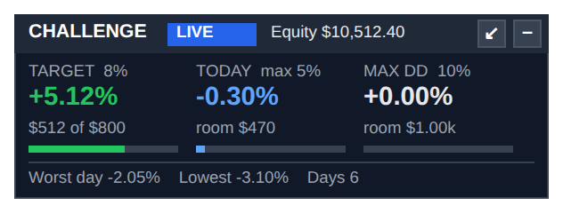
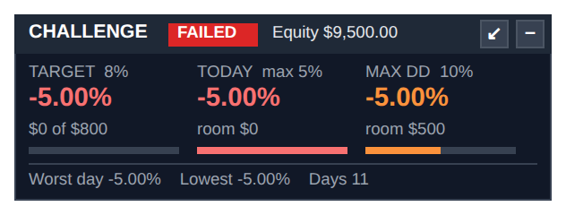
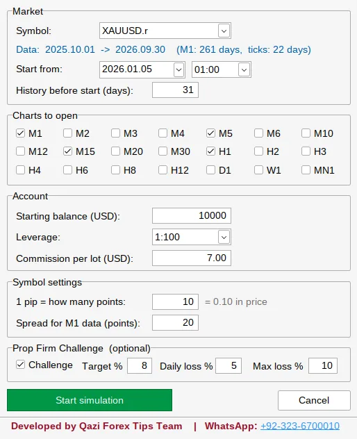
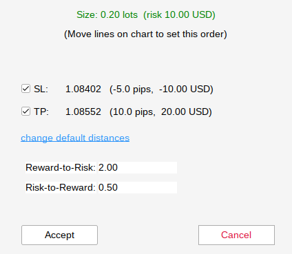
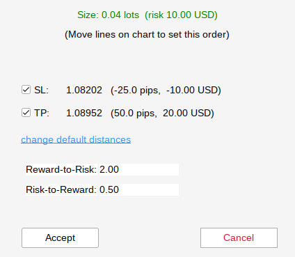
Your SL decides the lot. Not your mood.
- Choose Risk USD or Risk %; Visual Mode switches on by itself.
- SL 5 pips → 0.20 lots. Move it to 25 pips → 0.04 lots. The loss at the SL stays $10.
- Too far for your risk? The window turns red and tells you the largest SL that fits.
A report you can build a plan on
One click exports an HTML report that opens on any phone or browser. It reads your results like a fund manager would and writes your money management plan.
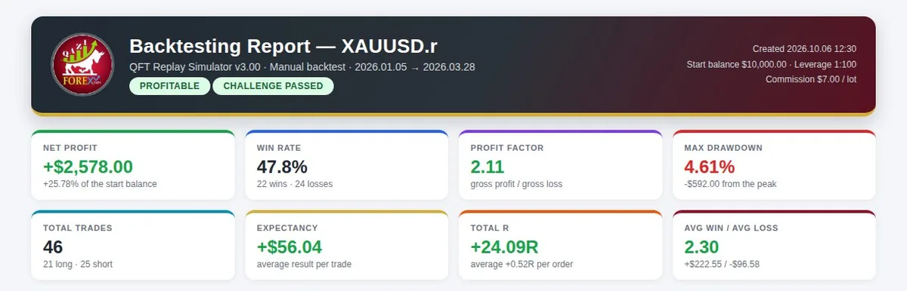
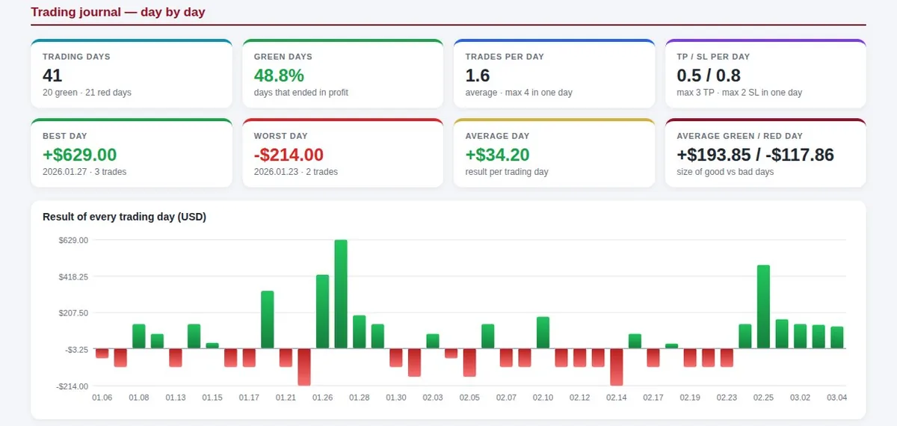
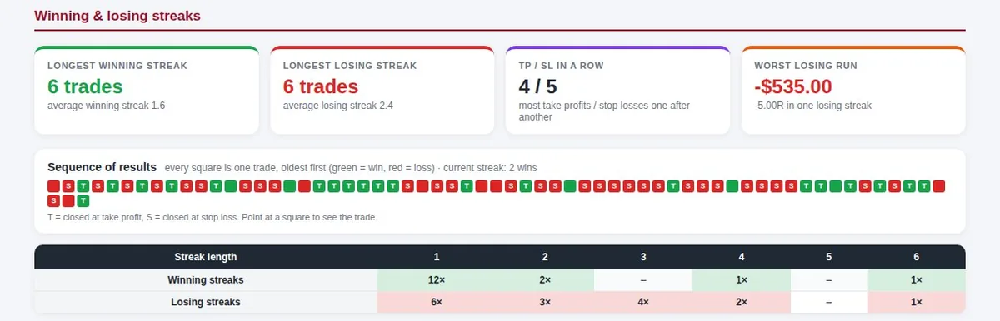
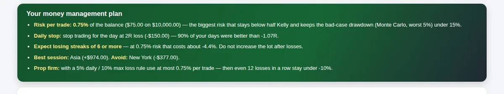
From install to first replay
Install
Copy two files into MT5 or MT4 (the simulator and its DLL). Allow DLL imports once.
Download data
Data Center: choose the symbol and dates. M1 candles are fast; ticks are exact.
Start a simulation
Pick the start date, balance, leverage, commission and, if you want, the challenge rules.
Trade & export
Replay, trade, rewind. Export the report and read your plan.
Watch the full tutorial
Installation, Data Center, a new simulation with prop firm rules, replay controls, risk in $, the challenge dashboard and the backtest report.
Download the simulator
The demo has every feature unlocked: 5 trades in total on the last 31 days of data. For the full version, send your MT5 or MT4 account number on WhatsApp and you receive your licence key.
Free for the QFT community. Students and members of the Qazi Forex Tips community get the licence key free: ask on WhatsApp +92-323-6700010.
Not sure which one? Check the name at the top of your platform window: MetaTrader 5 or MetaTrader 4. MT4 version: the replay runs on an offline chart, data comes from M1 history (History Center) or a CSV file because MT4 has no tick history, and there are no news lines because MT4 has no economic calendar.
Inside each zip: two numbered folders with the simulator (.ex5 for MT5, .ex4 for MT4) and its window library (.dll), a READ ME FIRST, the Install Guide (PDF, English + Roman Urdu), the full User Guide with every feature (PDF) and What's new in 3.04 (PDF), in both the MT5 and the MT4 zip.
- Unzip and copyRight-click the zip → Extract All. In MetaTrader: File → Open Data Folder →
MQL5(MT4:MQL4). Close MetaTrader, then copy folder 1 (.ex5/.ex4) intoExpertsand folder 2 (.dll) intoLibraries. - Allow DLL importsTools → Options → Expert Advisors: tick Allow DLL imports. Switch on Algo Trading.
- Attach and replayDrag the simulator onto any chart, for example XAUUSD H1, and start your first replay.
What changed in each version
Licensed users get every new version inside the simulator: Main Menu → Updates. All updates →
Version 3.04 Latest · MT5 & MT4
- Now also for MetaTrader 4: the MT4 version gets every 3.04 feature except indicator sync
- MT4: New Simulation warns when a symbol has very little M1 history and moves the start date so enough candles load
- Prop Firm Challenge from the simulator window: start, hide, stop or restart a challenge at any moment of the replay
- Ready challenge types: 2-Step Phase 1 and 2, 1-Step, Instant funding, or Custom rules
- Indicators added on one replay chart appear on all replay charts (MT5)
- Save Simulation: choose your own folder and name; Load: open a .qsim file from any folder
- New BUY / SELL buttons with the price, compact Smart Panel and Prop Firm buttons
- Taller footer and a shorter New Simulation window
Version 3.03
- Now also available for MetaTrader 4 (separate download, own licence key per MT4 account)
- Fix: the simulator window could be empty after the simulator was attached again, the chart timeframe was changed or a template was applied
- Includes everything from 3.02: Smart Panel, clean start, zoomed-out replay charts, website links
Version 3.02
- Smart Panel: Prev / Play / Next, speed, lot, Buy, Sell, Close All, P/L and time in one slim bar
- SMART PANEL button next to Buy / Sell, or minimize the window during a replay
- The chart that runs the simulator is minimized during the replay and comes back after
- Replay charts open one zoom step further out (more candles, better structure)
- Website and WhatsApp links in every window and in the backtest report
Version 3.00
- Prop Firm Challenge mode: target, daily loss and max loss with a live dashboard
- New pro report: journal, streaks, money plan, charts
- R-multiple statistics and Monte Carlo risk test
- Keyboard shortcuts: Space, N / P, B / S, + / −
- Online licence check
Version 2.99
- Risk in $: the lot size is calculated from your SL
- Moving the SL line re-sizes the lot, the loss never goes above your risk
- Import CSV: M1 data from HistData or Dukascopy
- Clearer messages for tick downloads
What traders say about the Simulator
5.0 ★ average from 20 reviews. Real reviews, shared with permission.
aik behtreen simulator hai jis pr kaam kr k us k results se ap aik achi strategy aur money management plan bna skte hain allah qazi sahb ko sehat aur barkat de. ameen.
Kamal sir Qazi shb
sir bohat hi kamal ka tool ha.bohat help ho rahi ha.ap ka bohat bohat shukria
As a student of Qazi Forex Tips, I genuinely appreciate the effort Sir Qazi Abdul Basit has put into providing the QFT community with the QFT Replay Simulator. For me, this is more than just a simulator; it is a practical learning tool that can help traders develop patience, discipline, and a deeper understanding of price action. Instead of simply looking at charts or depending on others' analysis, we can practice our own strategies, test our understanding, identify our mistakes, and learn from them without risking real money. What I personally like most is the opportunity to practice in a real-market-like environment and improve our decision-making through repeated backtesting. It reminds us that becoming a consistent trader requires more than just learning a strategy .....it requires practice, discipline, patience, and proper risk management. I truly value the time and effort Sir Qazi Abdul Basit invests in helping students learn the right way. Resources like this encourage us to take responsibility for our own learning rather than searching for shortcuts. Thank you, Sir Qazi Abdul Basit, for making this valuable tool available to the QFT community. In my opinion, the real benefit of this simulator depends on how seriously we use it. The more honestly we practice, record our results, and learn from our mistakes, the more we can grow as traders. Learn. Practice. Backtest. Improve. Become an independent trader. Proud to be a part of the Qazi Forex Tips learning community.
Feedback for Qazi Forex Tips ❤️ السلام علیکم سر قاضی عبدالباسط صاحب! آپ کی محنت، خلوص اور Forex Trading کی مفت تعلیم ہمارے لیے بہت قیمتی ہے۔ آپ مصروف ہونے کے باوجود لوگوں کو وقت دیتے ہیں، ان کے سوالات کے جواب دیتے ہیں اور انہیں سیکھنے کا موقع فراہم کرتے ہیں۔ یہ آپ کی محنت اور بہترین اخلاق کی نشانی ہے۔ آپ نے ثابت کیا ہے کہ حقیقی استاد وہ ہوتا ہے جو صرف خود کامیاب ہونے کی کوشش نہیں کرتا بلکہ دوسروں کو بھی سیکھنے اور آگے بڑھنے کا راستہ دکھاتا ہے۔ اللہ تعالیٰ آپ کو ہمیشہ کامیاب رکھے، آپ کے علم اور رزق میں برکت عطا فرمائے اور آپ کی محنت کو قبول فرمائے۔ آمین! 🤲❤️ Qazi Forex Tips — علم، محنت اور رہنمائی کا خوبصورت سفر! سر، آپ کی خدمات کے لیے دل سے شکریہ۔ ❤️
Qazi Abdul Basit Sahab – A Mentor Who Makes a Difference Qazi Abdul Basit Sahab is a dedicated trading mentor who generously shares his knowledge and guides people without charging them any fees. His efforts have helped many aspiring traders learn, grow, and better understand the financial markets. What makes him truly admirable is his willingness to educate others and help them improve their skills. He not only teaches trading but also provides valuable guidance and learning opportunities to those who may not have access to expensive courses. His dedication, generosity, and passion for teaching deserve sincere appreciation. May Allah bless Qazi Abdul Basit Sahab with success, good health, and countless rewards for guiding and educating others. A mentor who shares knowledge selflessly leaves a lasting impact on people's lives.
No reviews yet. Already using the QFT Replay Simulator? Be the first to share your experience.
Start with the free demo
One license works on one MT5 or MT4 account. Updates install from inside the simulator with one click.
5 trades in total and the last 31 days of data. Every feature unlocked to try.
Full version, unlimited trades and any period of data.
Full version for a year, with all updates.
Full version for good, with all updates.
Prices and activation: send your MT5 or MT4 account number on WhatsApp. The key works immediately.
Backtesting lessons
A simulator is only as good as the rules you test in it. These lessons cover how to backtest, what to look for on the chart and how to improve a strategy.
 Risk & Money Management · 24:00How to backtest a trading strategy like a pro
Risk & Money Management · 24:00How to backtest a trading strategy like a pro Risk & Money Management · 13:06Strategy optimization: improve your strategy step by step
Risk & Money Management · 13:06Strategy optimization: improve your strategy step by step Market Analysis · 32:31Rule-based multi-timeframe analysis (top-down)
Market Analysis · 32:31Rule-based multi-timeframe analysis (top-down) Price Action Basics · 40:35Support and Resistance: how to draw it, and why it fails
Price Action Basics · 40:35Support and Resistance: how to draw it, and why it fails Market Analysis · 25:34Market structure explained: the key to direction and entries
Market Analysis · 25:34Market structure explained: the key to direction and entries Market Analysis · 55:21How to spot a trend reversal early
Market Analysis · 55:21How to spot a trend reversal earlyRead the guides
Questions traders ask
Is QFT Replay Simulator a Soft4FX alternative for MT5?
Yes. Like Soft4FX it runs inside MetaTrader, and it adds a Prop Firm Challenge mode with a live dashboard, lot size from your $ risk, drawings that sync to every chart, sessions with ICT killzones, news auto-pause and a report with a money management plan. Try the free demo with 5 trades.
Is there an FX Replay or Forex Tester alternative that works inside MetaTrader 5?
Yes. FX Replay and Forex Tester Online run in the browser on their own data. QFT Replay Simulator replays inside your own MetaTrader 5 on your broker's prices, with your indicators and templates, a prop firm challenge mode and a full backtest report.
Is it like TradingView Bar Replay?
It works the same way, candle by candle with play, step and rewind, but inside MT5 and with real ticks or M1 data from your broker. It also replays Renko and Range charts, adds sessions and news on the chart, and gives you a full report.
How is it different from Soft4FX, FX Replay or Forex Tester?
QFT Replay Simulator runs inside your own MetaTrader 5 with a prop firm challenge mode, lot size from your $ risk and a report with a money management plan. See the side-by-side comparison at the top of this page.
What is a forex replay simulator?
A replay simulator plays past market data again, candle by candle, so you can trade it as if it were live. It is the fastest way to practise and backtest a manual strategy. QFT Replay Simulator does this inside MetaTrader 5.
Is there bar replay in MT5?
MetaTrader 5 has no built-in bar replay for manual trading. QFT Replay Simulator adds it: pick a date, press play or step one candle at a time, and trade with Buy, Sell, SL and TP.
Can I download the simulator for free?
Yes. The free demo download lets you try it with 5 trades. For full use you need a licence key, which you can ask for on WhatsApp.
Does it work on MT4?
Yes. There is a separate MetaTrader 4 version, now at 3.04 with the same Prop Firm Challenge button, BUY / SELL buttons and Save as / open from any folder as MT5; download the MT4 zip on this page. Three MT4 limits: the replay runs on an offline chart, MT4 brokers give no tick history (use M1 data from the History Center or import a CSV), and MT4 has no economic calendar, so there are no news lines. Each MT5 or MT4 account needs its own licence key.
Can I start a prop firm challenge in the middle of a replay?
Yes. Since version 3.04 the Prop Firm button on the Market tab starts a challenge from the current moment of the replay. The target and loss limits count from the balance at that moment, and you can stop it or start a new one (for example Phase 2) at any time.
Do indicators show on all timeframes in the replay?
Yes, in the MT5 version. Add an indicator to one replay chart and it is copied to all other replay charts with the same settings; each chart calculates it on its own timeframe. Remove it once and it is removed from all.
Can I share a simulation with my students?
Yes. Save Simulation lets you choose the folder and the name, and Load → Open from any folder opens a .qsim file from anywhere, for example one received on WhatsApp. The other computer needs the price data of that symbol.
Does it place real trades on my account?
No. Every trade is simulated with the simulator's own balance. Your real account is never touched.
Which broker do I need?
Any broker on MetaTrader 5 or MetaTrader 4. The simulator uses that broker's history, or M1 data you import from a CSV file (HistData, Dukascopy or another broker).
What computer do I need?
A Windows PC or laptop that runs MetaTrader 5 (64-bit) or MetaTrader 4, with "Allow DLL imports" switched on. The computer should be online at least once a week for the license check.
Can I practise FTMO-style or any prop firm rules?
Yes. Press Prop Firm on the Market tab, choose 2-Step Phase 1 or 2, 1-Step, Instant funding, or Custom and type the target, daily loss and max loss of your firm. Set a rule to 0 to switch it off.
Is a backtest a guarantee of future profit?
No. It shows what your rules did on past data. The report adds a safety margin (half Kelly, worst 5% Monte Carlo case) because live trading adds slippage and emotions.
Is there a guide?
Yes. A full User Guide (PDF) with screenshots of every window comes with the simulator.
Try it on your own MT5
ڈیمو اور لائسنس کے لیے واٹس ایپ کریں
+92-323-6700010CopiedSend your MT5 account number and the plan you want. Demo questions are welcome.